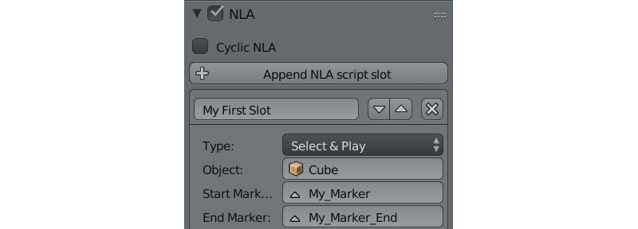

Нелинейная анимация¶
Редактор NLA¶
Редактор нелинейной анимации, имеющийся в программе Blender, позволяет в удобной форме задавать поведение сцены. С его помощью можно реализовать несложные сценарии. Таким образом исключается необходимость программирования простых сцен и приложений.

Движком поддерживается управление следующими сущностями:
- Любая анимация, параметры которой могут быть представлены с помощью действий (Action)
- Воспроизведение звуков
- Эмиссия частиц (в виде привязки к глобальной шкале времени)

Использование¶
- Во вкладке Scene выбрать опцию Use NLA.
- В редакторе NLA Editor задать необходимую конфигурацию поведения сцены.
- На панели Timeline выбрать интервал времени анимации.
Дополнительные настройки¶
Настройка сцены Blend4Web > Cyclic NLA позволяет активировать режим циклической NLA-анимации.
Ограничения¶
- Вертексная анимация не поддерживается.
- Масштабирование и зацикливание отдельных полос анимации (Strip) не поддерживается.
- Одновременное проигрывание различных видов анимации для одного объекта не поддерживается.
Визуальное программирование (NLA Script)¶
Осуществляется с помощью добавления слотов логики (NLA Script Slot) на вкладке настроек сцены Blender. С их помощью можно существенно расширить функциональность сцены, не прибегая при этом к программированию.

Слоты являются логическими блоками, которые выполняются с первого по последний последовательно, за исключением случаев, когда в слоте явно обозначен переход (Jump или Conditional Jump). При достижении конца списка, выполнение логики останавливается, либо, если на сцене активирована настройка Blend4Web > Cyclic NLA, начинается сначала.
Примечание
Использование настройки Blend4Web > Cyclic NLA совместно с NLA Script не приводит к автоматическому зацикливанию анимации.
Для реализации сложной логики предусмотрены числовые переменные, называемые регистрами. Каждый из 8 регистров может хранить в себе одно числовое значение. Регистры могут быть использованы для хранения какого-либо состояния сцены (например, это может быть счётчик проигрываемых анимаций, количество жизней, оставшихся у персонажа итд.).
Пример использования NLA Script:
Ниже рассмотрены все возможные варианты слотов.
Play¶
Проигрывать участок NLA, начиная с кадра, на который указывает маркер. Анимация воспроизводится до следующего маркера, либо до конца шкалы времени сцены, после чего управление переходит к следующему слоту.

Select & Play¶
Ожидать, когда пользователь выберет объект (с помощью клика мышью в версии движка для десктопа, либо нажатия на экране в мобильной версии). Если выбран объект, указанный в параметрах слота, начать играть анимацию аналогично слоту Play, если же был выбран любой другой объект - немедленно передать управление следующему слоту.
Последняя функциональность используется для выбора одного из нескольких объектов, причём Select & Play удобно размещать в стеке один за другим. В данном случае результат выбора пользователя может быть подхвачен одним из слотов из данной последовательности, поскольку переход без анимации производится мгновенно.
Примечание
Чтобы пользователь имел возможность выбрать объект, в его настройках необходимо активировать опцию Selectable, как в случае реализации эффекта свечения силуэта.

{kind=link}
Select & Jump¶
Аналогично слоту Select & Play, за исключением того, что вместо анимации осуществляется переход. Указанная функция позволяет реализовать более сложную логику, поскольку появляется возможность распознавания результата выбора пользователя (выделение текущего объекта приводит к переходу по имени слота, который не обязательно является следующим в списке).
Conditional Jump¶
Перейти к указанному слоту в случае выполнения выбранного условия. В качестве параметров условия (операндов) могут выступать также регистры, которые активируются с помощью соответствующих переключателей.
Register Store¶
Записать числовое значение в регистр.
Math Operation¶
Выполнить математическую операцию и сохранить результат в регистр. Любой из параметров (операндов) может быть либо числовым значением, либо регистром.
Show Object и Hide Object¶
Используются для скрытия и отображения объектов.
Page Redirect¶
Служит для перенаправления на другие веб-страницы.
Page Param¶
Позволяет сохранить произвольный параметр веб-страницы в выбранном числовом регистре.
Noop¶
Сокращение от “No Operation”. Означает, что при обработке слота данного типа, никаких действий произведено не будет. Слот удобно использовать совместно с типом Jump или Conditional Jump.